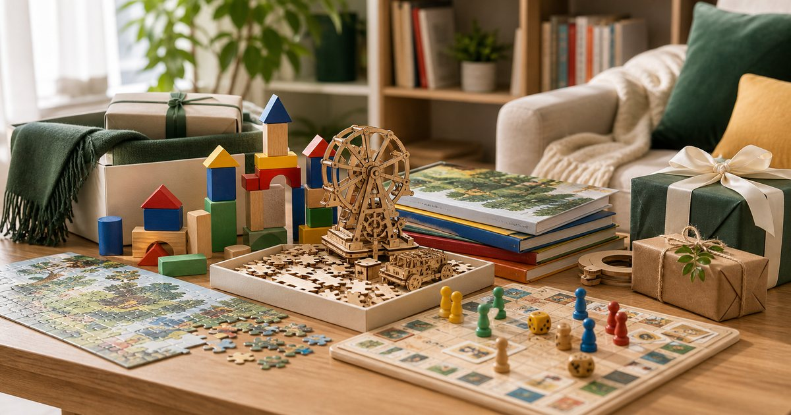

Elite Fashion｜家庭禮物與益智玩具：積木、桌遊、拼圖與書店選物怎麼挑
家庭禮物不必把網站變成親子教養站。從積木、桌遊、拼圖、書店選物到收納，整理適合送禮和週末共玩的選擇方式。

先看年齡、空間與是否需要大人陪同
積木、拼圖、桌遊和立體拼組都需要不同程度的空間與陪伴。送禮前先想家庭是否有桌面、收納盒和共玩時間。
可以把 磚星球、888便利購、WA-GU-MI、墊腳石書店、寶寶共和國與 SUSS Living 放在同一個生活情境裡比較，但要先分清楚用途。編輯部會看保存、尺寸、清潔、是否容易收納、是否適合家中成員共同使用，而不是把清單寫成越多越完整。
比較穩妥的順序是先確認 孩子年齡、零件大小、收納位置與大人是否能陪同。常見失誤是 只看禮物外盒，沒有想拆開後放哪裡；在 生日禮、週末家庭時間與拜訪朋友家 裡，能被穩定使用、容易補貨、看得懂限制的品項，通常比一次買很多更實際。
- 零件多的禮物要先看收納。
- 送禮時保留退換與年齡標示資訊。
積木和立體拼組要看完成後放哪裡
積木和木質立體拼組的樂趣不只在組裝，也在完成後如何展示或拆回去。若家中沒有展示位置，就要先選可收納的款式。
可以把 磚星球、WA-GU-MI、SUSS Living 與寶寶共和國 放在同一個生活情境裡比較，但要先分清楚用途。編輯部會看保存、尺寸、清潔、是否容易收納、是否適合家中成員共同使用，而不是把清單寫成越多越完整。
比較穩妥的順序是先確認 完成後是否展示、拆解或放回盒中。常見失誤是 買了大型作品，完成後佔滿餐桌；在 小宅客廳、書房桌面與親子共玩區 裡，能被穩定使用、容易補貨、看得懂限制的品項，通常比一次買很多更實際。
- 先確認完成品尺寸。
- 收納盒和展示位置要一起準備。
桌遊和拼圖適合週末，不一定適合平日晚上
桌遊和拼圖需要完整時間，適合週末或假日，不一定適合平日晚上硬塞。送禮時要看家庭作息。
可以把 888便利購、墊腳石書店、寶寶共和國與 SUSS Living 放在同一個生活情境裡比較，但要先分清楚用途。編輯部會看保存、尺寸、清潔、是否容易收納、是否適合家中成員共同使用，而不是把清單寫成越多越完整。
比較穩妥的順序是先確認 一次遊玩時間、是否能中途收起、規則是否容易懂。常見失誤是 買了規則複雜的禮物，結果沒人有時間學；在 週末午後、寒暑假與家庭聚會 裡，能被穩定使用、容易補貨、看得懂限制的品項，通常比一次買很多更實際。
- 規則越簡單，越容易全家參與。
- 可中途收納的拼圖更適合小宅。
書店選物讓禮物更安靜，也更耐放
書店選物、繪本、文具或小型創作材料，適合不想送大型玩具的場合。它們安靜、好收，也容易和其他禮物搭配。
可以把 墊腳石書店、SUSS Living、WA-GU-MI 與寶寶共和國 放在同一個生活情境裡比較，但要先分清楚用途。編輯部會看保存、尺寸、清潔、是否容易收納、是否適合家中成員共同使用，而不是把清單寫成越多越完整。
比較穩妥的順序是先確認 孩子是否喜歡閱讀、家中是否已有類似書籍。常見失誤是 只追求大盒禮物，忽略小而常用的選物；在 同事小孩禮、拜訪家庭與節日小禮 裡，能被穩定使用、容易補貨、看得懂限制的品項，通常比一次買很多更實際。
- 書和文具適合搭配小包裝。
- 避免重複書籍，可先詢問主題偏好。
禮物也要附上收納方法
家庭禮物若零件多，最好連收納方式一起考慮。透明盒、分隔袋、書架位置或立體拼組展示區，都會影響禮物能不能長久使用。
可以把 SUSS Living、磚星球、888便利購、WA-GU-MI 與墊腳石書店 放在同一個生活情境裡比較，但要先分清楚用途。編輯部會看保存、尺寸、清潔、是否容易收納、是否適合家中成員共同使用，而不是把清單寫成越多越完整。
比較穩妥的順序是先確認 零件是否容易遺失、收納是否能由孩子參與。常見失誤是 禮物很精彩，但拆開後就散在地上；在 小宅、雙薪家庭與多孩家庭 裡，能被穩定使用、容易補貨、看得懂限制的品項，通常比一次買很多更實際。
- 零件多的禮物附上收納盒更貼心。
- 收納方式越簡單，越容易維持。
家庭禮物的核心，是共玩而不是塞滿
一份好的家庭禮物，不一定要最大盒。能讓家人坐下來一起完成一段時間，並且收得回去，往往更有價值。
可以把 磚星球、888便利購、WA-GU-MI、墊腳石書店、寶寶共和國與 SUSS Living 放在同一個生活情境裡比較，但要先分清楚用途。編輯部會看保存、尺寸、清潔、是否容易收納、是否適合家中成員共同使用，而不是把清單寫成越多越完整。
比較穩妥的順序是先確認 是否能創造共玩時間、是否容易收尾。常見失誤是 追求驚喜感，卻讓家長收拾更多麻煩；在 週末拜訪、節日送禮與家庭聚會 裡，能被穩定使用、容易補貨、看得懂限制的品項，通常比一次買很多更實際。
- 選禮物時同時想開場與收尾。
- 不用把每份禮物都做得很大。
FAQ
家庭禮物要選越大盒越好嗎？
不一定。要看年齡、空間、收納與共玩時間。太大盒反而可能造成整理負擔。
積木或立體拼組送禮要注意什麼？
要看零件大小、完成品尺寸、展示或收納位置，以及是否適合收禮家庭的年齡與空間。
書店選物會不會太普通？
不會。書、文具和小型創作材料安靜、好收，也適合搭配其他禮物。
下一步建議
如果你正在挑家庭禮物，可以先看年齡、空間、收納與共玩時間，再決定玩具或書店選物。
重要警語
本文為一般家庭禮物、玩具與書店選物情境整理，不構成學習結果或個別選品承諾。玩具與用品請依年齡標示、商品說明與成人陪同需求使用。
本文含品牌／商品導購連結；若你透過部分商品連結前往選購，Elite Fashion 可能取得合作收益。本文仍以編輯判斷與使用情境整理為主，價格、規格、活動與庫存請以商品頁公告為準。